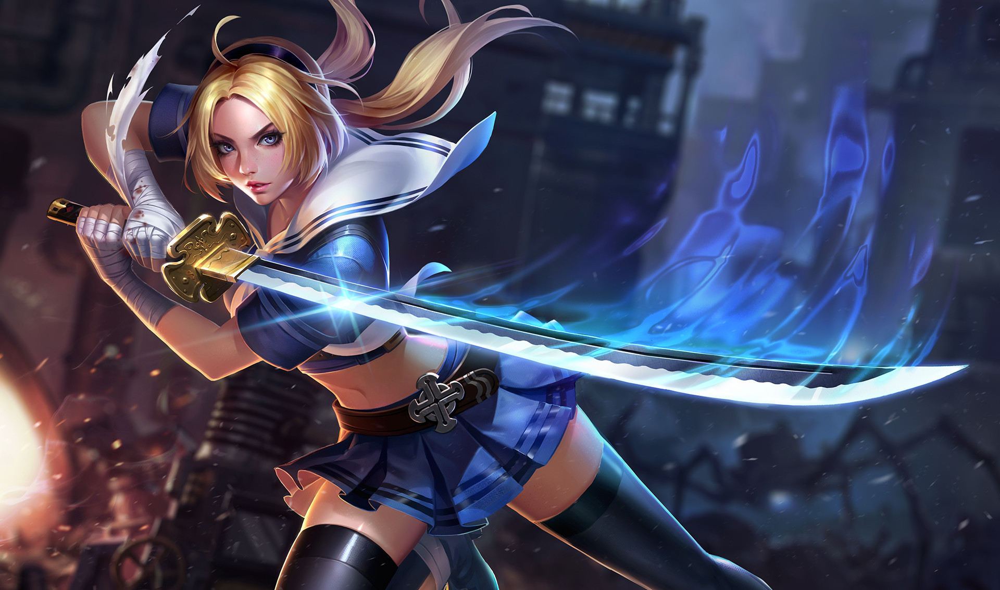

BUFFTERFLY
Tiểu sử
"Cuộc đời của ta sẽ ra sao khi chiến tranh kết thúc?" Trong một đêm lạnh giá, Butterfly trầm ngâm bên thanh gươm lấp lánh ánh sáng dìu dịu ấm áp.
"Tồn tại trong thế giới hỗn loạn này chẳng dễ dàng chút nào, đặc biệt là những người kiếm tiền từ máu của kẻ khác. Ta còn chẳng có thời gian để suy nghĩ về bất cứ điều gì khác" giọng của cô lạnh lùng mà chua chát, phát ra từ bóng tối. Mới vừa thực hiện nhiệm vụ trước đó ít lâu, Butterfly không hề có dấu hiệu mệt mỏi. Là một sát thủ ám sát thuê được huấn luyện tốt, cô có khả năng duy trì và khôi phục sức chịu đựng của mình xuyên suốt các cuộc chiến.
Butterfly là một biệt hiệu được cô sử dụng trong hợp đồng ám sát. Không giống như lính đánh thuê thông thường, nhiệm vụ của Butterfly rất đa dạng và phức tạp. Khách hàng bắt đầu yêu cầu sát thủ thực hiện nhiệm vụ khó khăn hơn; nhấn mạnh vào khả năng, giới tính, tuổi tác, và thậm chí thời gian xuất hiện. Để đáp lại, Butterfly không ngừng cải thiện bản thân để phục vụ những yêu cầu đó.
Butterfly từng là một đứa trẻ mồ côi, được nuôi dưỡng bởi hiệp hội lính đánh thuê và huấn luyện qua rất nhiều cuộc chiến. Lớn lên, cô ra chiến trường kiếm tiền, trả lại khoản phí nuôi dạy cho hiệp hội. Mỗi nhiệm vụ thành công, Butterfly phải trả họ một nửa số tiền kiếm được, cho đến khi món nợ từ bé của cô được thanh toán sòng phẳng.
Những thành viên của hiệp hội tử trận ngày một nhiều. Điều này khiến cho Butterfly được giao nhiệm vụ quan trọng nhất: bảo vệ Astrid, con gái út của gia tộc Hoa Hồng. Cô đã hoàn thành rất nhiều nhiệm vụ tương tự, ngụy trang trong bộ đồ người hầu bí mật hộ tống những quý cô sang chảnh, diêm dúa đi đến các sự kiện khác nhau.
Nếu đó không phải là một công việc được trả lương cao, Butterfly đã chọn một nhiệm vụ thú vị hơn, như ám sát một gã cưỡi rồng, hoặc loại bỏ thủ lĩnh của toán cướp. Nó khiến cô thấy hưng phấn hơn việc dành cả đêm để nghe những câu chuyện viển vông của tụi quý tộc.
Kỳ lạ thay, nhiệm vụ mới không phải là nhàm chán như Butterfly đã nghĩ. Cô hoàn toàn bị choáng ngợp bởi độ khó của nhiệm vụ, bởi cô được cử đến để bảo vệ Astrid trong một cuộc chiến chống lại binh đoàn Lokheim, những kẻ đã đánh bại Arduin và nhóm hiệp sĩ Vedan.
Sau cái chết của cha, anh trai, và chứng kiên lâu đài bị vây hãm, Astrid lãnh đạo các hiệp sỹ Hoa Hồng cầm kiếm tử chiến với kẻ thù. Butterfly được thuê để bảo vệ Astrid. Và khi đao kiếm dừng lại, cả hai cùng bị thương nặng.
Theo các quy định của hợp đồng, Butterfly có quyền từ bỏ, chiếu theo điều khoản "Mức độ phức tạp của công việc". Tuy nhiên, cô tiếp tục nhiệm vụ bảo vệ Astrid bé bỏng, người thừa kế cuối cùng của dòng dõi Bá tước Hoa hồng. Chừng nào Astrid còn thở, còn sức nâng cao thanh kiếm Tro Tàn của cha nàng, nhiệm vụ của Butterfly còn chưa kết thúc. Đó không chỉ đơn thuần là nhiệm vụ, nó cũng là cách cô làm việc.
"Từ 'chạy trốn' không có trong từ vựng của tôi”
"Tồn tại trong thế giới hỗn loạn này chẳng dễ dàng chút nào, đặc biệt là những người kiếm tiền từ máu của kẻ khác. Ta còn chẳng có thời gian để suy nghĩ về bất cứ điều gì khác" giọng của cô lạnh lùng mà chua chát, phát ra từ bóng tối. Mới vừa thực hiện nhiệm vụ trước đó ít lâu, Butterfly không hề có dấu hiệu mệt mỏi. Là một sát thủ ám sát thuê được huấn luyện tốt, cô có khả năng duy trì và khôi phục sức chịu đựng của mình xuyên suốt các cuộc chiến.
Butterfly là một biệt hiệu được cô sử dụng trong hợp đồng ám sát. Không giống như lính đánh thuê thông thường, nhiệm vụ của Butterfly rất đa dạng và phức tạp. Khách hàng bắt đầu yêu cầu sát thủ thực hiện nhiệm vụ khó khăn hơn; nhấn mạnh vào khả năng, giới tính, tuổi tác, và thậm chí thời gian xuất hiện. Để đáp lại, Butterfly không ngừng cải thiện bản thân để phục vụ những yêu cầu đó.
Butterfly từng là một đứa trẻ mồ côi, được nuôi dưỡng bởi hiệp hội lính đánh thuê và huấn luyện qua rất nhiều cuộc chiến. Lớn lên, cô ra chiến trường kiếm tiền, trả lại khoản phí nuôi dạy cho hiệp hội. Mỗi nhiệm vụ thành công, Butterfly phải trả họ một nửa số tiền kiếm được, cho đến khi món nợ từ bé của cô được thanh toán sòng phẳng.
Những thành viên của hiệp hội tử trận ngày một nhiều. Điều này khiến cho Butterfly được giao nhiệm vụ quan trọng nhất: bảo vệ Astrid, con gái út của gia tộc Hoa Hồng. Cô đã hoàn thành rất nhiều nhiệm vụ tương tự, ngụy trang trong bộ đồ người hầu bí mật hộ tống những quý cô sang chảnh, diêm dúa đi đến các sự kiện khác nhau.
Nếu đó không phải là một công việc được trả lương cao, Butterfly đã chọn một nhiệm vụ thú vị hơn, như ám sát một gã cưỡi rồng, hoặc loại bỏ thủ lĩnh của toán cướp. Nó khiến cô thấy hưng phấn hơn việc dành cả đêm để nghe những câu chuyện viển vông của tụi quý tộc.
Kỳ lạ thay, nhiệm vụ mới không phải là nhàm chán như Butterfly đã nghĩ. Cô hoàn toàn bị choáng ngợp bởi độ khó của nhiệm vụ, bởi cô được cử đến để bảo vệ Astrid trong một cuộc chiến chống lại binh đoàn Lokheim, những kẻ đã đánh bại Arduin và nhóm hiệp sĩ Vedan.
Sau cái chết của cha, anh trai, và chứng kiên lâu đài bị vây hãm, Astrid lãnh đạo các hiệp sỹ Hoa Hồng cầm kiếm tử chiến với kẻ thù. Butterfly được thuê để bảo vệ Astrid. Và khi đao kiếm dừng lại, cả hai cùng bị thương nặng.
Theo các quy định của hợp đồng, Butterfly có quyền từ bỏ, chiếu theo điều khoản "Mức độ phức tạp của công việc". Tuy nhiên, cô tiếp tục nhiệm vụ bảo vệ Astrid bé bỏng, người thừa kế cuối cùng của dòng dõi Bá tước Hoa hồng. Chừng nào Astrid còn thở, còn sức nâng cao thanh kiếm Tro Tàn của cha nàng, nhiệm vụ của Butterfly còn chưa kết thúc. Đó không chỉ đơn thuần là nhiệm vụ, nó cũng là cách cô làm việc.
"Từ 'chạy trốn' không có trong từ vựng của tôi”
CÔNG TY CỔ PHẦN GIẢI TRÍ VÀ THỂ THAO ĐIỆN TỬ VIỆT NAM
Văn phòng đại diện: Tầng 29, tòa nhà Trung tâm Lotte Hà Nội, số 54, đường Liễu Giai, Phường Cống Vị, Quận Ba Đình,
Thành phố Hà Nội, Việt Nam
Điện thoại: (04)7305-3939 | Fax: (04)3759-2429